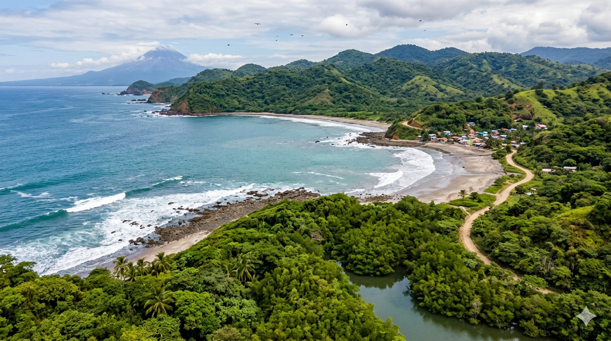
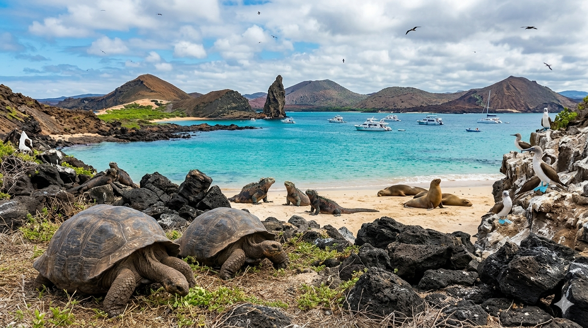
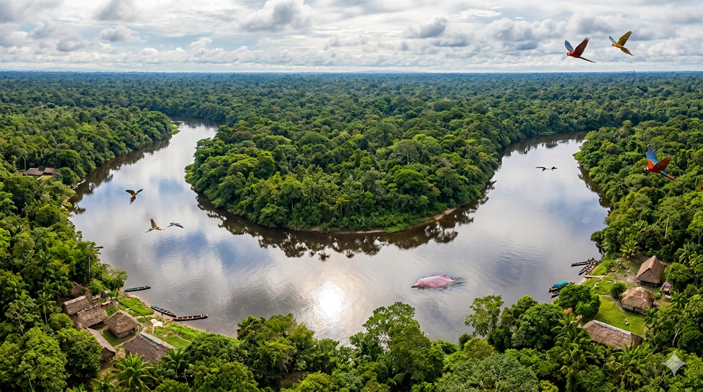

Experinces in Equador

Costa
Come explore the beuftuil area of Costa, with it's beaches and stunning nature!
Andes
Come explore the beuftuil area of the Andes, stunning mountian ranges await you!

Galapagos
Come explore the beuftuil area of the Galapagos Islands! Filled with stunning widlife and a beufuil costal breeze

Amazon
Come explore the beuftuil area of the Amazon! Experince a reagion unlike any other with it's one of kind nature and animals!